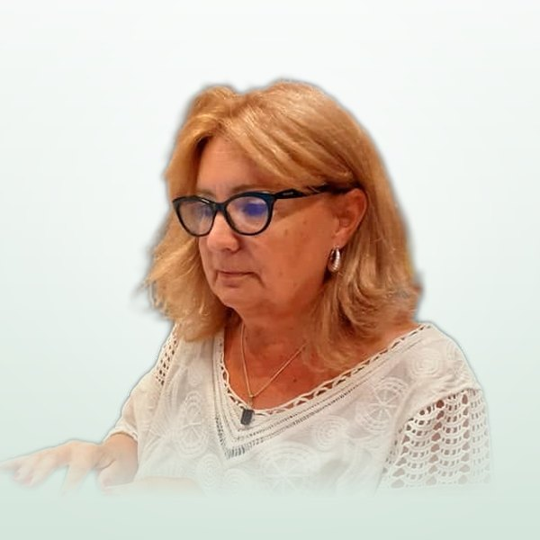

Monica Patricia Rizzo
Abogada y mediadora · Presidenta de la Federación de Sociedades Italianas de Mar del Plata y zona
Profesora adjunta de Teoría General del Derecho en la Facultad de Derecho de la UNMDP. Integró el COM.It.Es. durante tres períodos y forma parte de la Comisión Directiva de la Asociación Emilia-Romagna de Mar del Plata.
Leer reseña completa
Formación y docencia
- Profesora adjunta de Teoría General del Derecho, Facultad de Derecho (UNMDP).
- Integrante del cuerpo docente de la Fundación de Ciencias Jurídicas y Sociales del Colegio de Abogados de la Provincia de Buenos Aires (CIJUSO), en el curso de Formación Básica en Mediación.
- Especialización en Métodos Alternativos de Resolución de Conflictos (UNMDP y Colegio de Abogados, 1996).
- Doctoranda con la tesis “El ámbito de validez de la circunscripción electoral exterior italiana. Análisis desde la teoría del derecho”.
Raíces italianas
- Ciudadanía italiana registrada en el Comune di Castelvetro (Modena), Italia.
- Regiones Emilia-Romagna y Piemonte (Bagnasco, Cuneo).
Actividad en la colectividad italiana
- Consultora de la Región Emilia-Romagna: 1991-2010 (Consultas 3, 4, 5 y 6).
- Miembro del COM.It.Es. en los períodos 1997-2004, 2004-2015 y 2015-2021.
- Miembro de la Comisión Directiva de la Asociación Emilia-Romagna Mar del Plata.
- Presidenta de la Federación de Sociedades Italianas de Mar del Plata y zona.